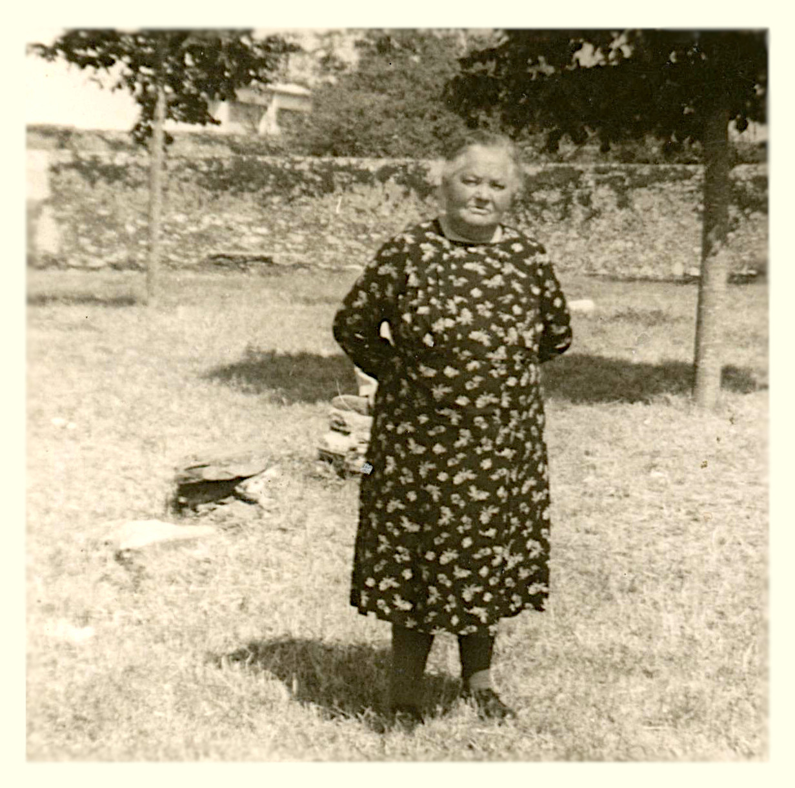
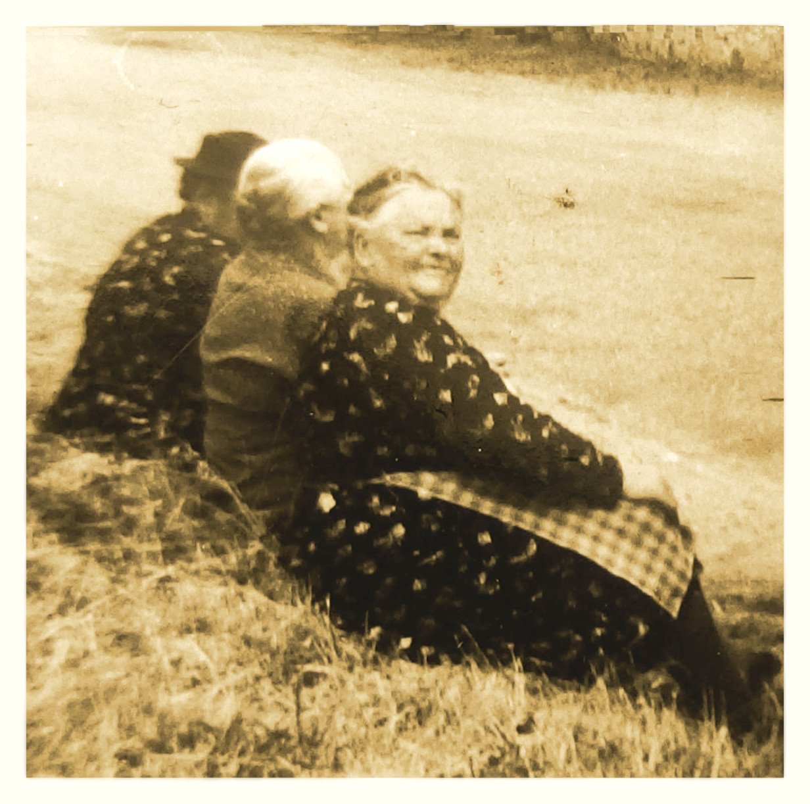
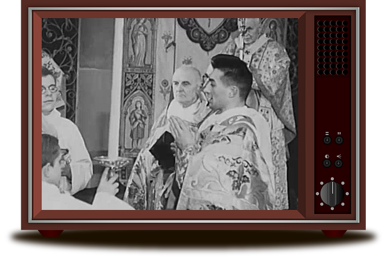
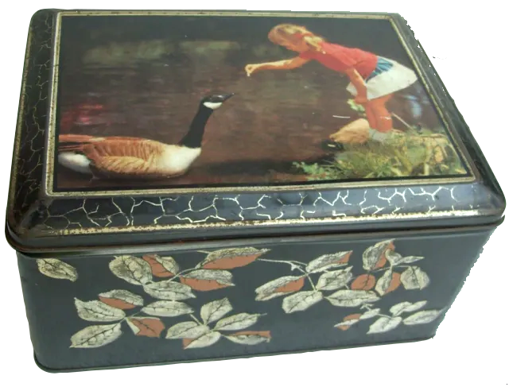

Bienvenue chez nos aïeux Henri et Clémentine
Samedi 23 mai 1914
Henri et Clémentine
s'unissaient en mariage dans l'église Saint Vital de Saint Viaud (Loire-Inf.)
Henri vers l'année 1945
Agé d'environ 55 ans
Clementine vers l'année 1945
Agée d'environ 55 ans
Henri Pierre EDELIN-CHAUVET
(1889-1978)
Henri en 1969 (81 ans)
Clémentine Marie GOISLARD-GAUBICHER
(1888-1975)
Clémentine en 1969 (81 ans)
Clémentine est née le 26 septembre 1888, au 10 rue de la Paix à St Nazaire (Loire inf.). Son Père, Pierre Charles, est forgeron et sa mère, Clémentine Constance GAUBICHER, est journalière. Les parents de Clémentine se sont mariés à Nantes où ils ont vécu avant d'habiter à St Nazaire. Les aïeux de son père, Pierre Charles, sont originaires des environs de Saumur (Maine et Loire). Les aïeux de sa mère, Clémentine Constance, sont nantais avec des origines : des Côtes d’Armor, d’Indre et Loire et de Bourgogne (Côte d'Or) par un Grenadier au 93eme régiment d’infanterie de l’armée républicaine arrivé à Nantes en 1794 au moment des guerres de Vendée. Selon les actes états civils, les métiers exercés par ses aïeux sont diverses : chamoiseur, forgeron , gardien d'aliénés, jardinier, journalier, journalière, laboureur, marchand, ménagère, ouvrier, huilier, jardinier, pêcheur(en eau douce de la Loire), raffineur(ouvrier), revendeuse, serrurier, soldat(grenadier), tisserand, voiturier et volailler.
Clémentine a eu 2 frères ainés qui sont nées et mort avant sa propre naissance : Charles Théophile (1881-1881, 7jours), Charles Pierre Louis (1885-1886, 7mois). Sa mère meurt le 1er octobre 1893 à l’âge de 33 ans, Clémentine vient d'avoir juste 5 ans. Son père se remarie le 1er décembre 1894 avec Jeanne Marie DENIGOT. De cette union naitront Charles François Clément GOISLARD le 10 septembre 1895 et Marie Anne GOISLARD le 13 février 1897. Malheureusement le mois précédant la naissance de Marie Anne leur père mourait à l’âge de 38 ans, le 16 janvier 1897, Clémentine est alors âgée de 8 ans. Elle se retrouve orpheline avec sa belle-mère, son petit frère (1 an) et sa petite sœur nourrisson.
Très tôt après le décès de son père Clémentine part en orphelinat catholique où elle suit une éducation scolaire et religieuse qui l’influencera toute sa vie. Son petite frère Charles et sa petite sœur Marie décèderont en 1904 à l’âge respective de 8 ans et 7 ans. Clémentine reste maintenant la seule survivante de sa fratrie.
Lorsqu’elle doit quitter l’orphelinat, vers de l'âge de 12 ans probablement, elle est placée comme "servante de ferme" dans une métairie du Pays de Retz, ensuite elle sera "domestique" au 50 rue du Haut Paimboeuf dans la famille Louër de la Caffinière. Elle rencontre plus tard Henri avec lequel elle se marie en l’église de St Vital à St Viaud le 23 mai 1914, Clémentine a alors 25 ans. Elle donnera naissance à 6 enfants, l’un d’entre eux, Marie Madeleine ne vivra que 7 mois (décès en 1930). Clémentine était une personne gaie avec un brin de malice bienveillante et surtout très altruiste. Elle maniait le crochet et les aiguilles à tricot avec talent. Clémentine était très pieuse et très active au sein de la paroisse catholique de Paimboeuf. Pendant longtemps elle a été chaisière à l’église St Louis, elle se chargeait aussi de la quête à la fin du service religieux.
Clémentine décédera le 8 novembre 1973 à Paimboeuf à l’âge de 85 ans, son mari Henri lui survivra 4 ans.
Les Sapeurs-Pompiers de Paimboeuf
Nous avons peu de document concernant son bénévolat de Sapeur-Pompier à la caserne de Paimboeuf. Seulement 1 photo et 1 coupure de presse, les 2 ont été réalisées lors de commémorations de la Sainte Barbe, le patron des pompiers. On peut supposer que son certificat de capacité à la conduite des véhicules militaires l'a amené à piloter les camions d'intervention.
Henri(88ans) vétéran moustachu à droite tenant sa canne
 La Pelouse 
Souvent, les beaux après-midi d’été, Clémentine pratiquait sa passion du crochet sur la «Pelouse» en face de chez elle. La «Pelouse» était un lieu bien agréable : un beau terrain surélevé, engazonné et arboré. Les enfants profitaient pleinement de cette espace pour y jouer librement avec les grillons, sauterelles, coccinelles et autres insectes bien intrigants. Tout autour du lieu il y avait aussi quelques allées et venues pour distraire les adultes et ainsi alimenter leurs conversations. Clémentine était accompagnée, au grès des moments, de quelques voisines et membres de sa famille qui s’adonnaient, elles aussi, au maniement de l’aiguille. Le tricot, le raccommodage de vêtements et le canevas tissé étaient les activités les plus fréquentes. Certaines pouvaient aussi rapporter un livre, un journal ou un roman photo pour alterner les occupations. Toutes ces dames s’installaient à l’ombre d’un vieux mur mitoyen, chacune avait amené sa chaise pour son confort. La quiétude régnait et pouvait ainsi devenir un lieu propice au papotage.
La Messe Dominicale 
Au bout de sa vie, Clémentine se déplaçait difficilement, elle suivait donc la messe à la télévision le dimanche matin. Elle prenait soin d'augmenter le volume du son pour pouvoir continuer à entendre le service religieux si elle devait aller dans sa cuisine. Quelques fois la fenêtre de sa pièce de vie était entrouverte sur la rue Pronzat, alors les quelques passants du moment profitaient des bonnes paroles du prête officiant sur l'ecran cathodique.
La Boite à Berlingot 
Un autre plaisir de Clémentine, quand il y avait des enfants qui jouaient dans la rue Pronzat, était d’ouvrir sa fenêtre qui donnait sur cette rue et d’ensuite secouer bruyamment sa boite métallique pleine de bonbons. Alerter par le bruit les enfants arrêtaient promptement leurs jeux et accouraient comme une volée de moineaux vers la fameuse boite afin d'en prélever une des sucreries promises par le son produit. À cet instant-là, la joie de Clémentine était immense car son manège avait encore une fois très bien fonctionné.
Souvenirs d'enfants
Henri est né le 27 juillet 1889 à St Viaud (Loire inf.). Ses parents Jean Marie EDELIN et Marie CHAUVET sont laboureurs. Tous les aïeux d’Henri, en remontant jusqu’au début du 17e siècle, sont originaires exclusivement du Pays de Retz (St Viaud, Le Clion, St Père-en-Retz, Frossay, St Brévin ...). Ses ascendants sont presque tous laboureur, il y a aussi un tisserand. Henri a 2 frères et 3 sœurs : Jean Marie, Alexandre, Marie, Constance et Jeanne. En 1896 Marie et Constance meurent en bas âge, respectivement à l’âge de 4 ans et 2 ans. Son père, Jean Marie, meurt l'année suivante en février 1897 à l’âge de 35 ans, Henri a alors 7 ans.
Henri apprend à lire et écrire mais très vite il devient valet de ferme, notamment chez Lucien Garnier. A l’âge de la conscription en 1910, Il est exempté par le conseil de réforme de l'armé pour "faiblesse générale". Il reprend donc son activité de laboureur.
Il épouse Clémentine le 23 Mai 1914 à la mairie de Corsept(Loire inf.) pour ensuite s’unir avec Clémentine devant le seigneur en l'église St Vital de St Viaud le même jour. A la déclaration de la première guerre mondiale, son frère, Alexandre est mobilisé. Alexandre est affecté au 137e régiment d’infanterie et meurt, à l’âge de 23 ans, le 6 septembre 1914 à la Fère-Champenoise (dans le village de Normée) pendant la 1er bataille de la Marne. En 1915 Henri est rappelé à l’activité dans le 147e régiment d’infanterie. Mais comme Il est atteint d’une pleurésie grave il est maintenu reformé provisoire. En 1916 il est rappelé de nouveau dans le 147e pour passer ensuite dans le 11e escadron du train pour servir en tant que chauffeur de troupe. Le 23 mars 1917 son frère, Jean Marie, meurt d’une tuberculose longue de plusieurs années à St Viaud à l’âge de 28 ans. Sa mère, Marie CHAUVET, meurt le mois suivant le 23 avril 1917 à l’âge de 57 ans. Le 28 décembre 1918, Henri perd sa soeur Jeanne qui meurt à l’hôpital de Paimboeuf à l’âge de 21 ans.
En ce tout début d’année 1919, Henri est orphelin de père et mère et seul survivant de sa fratrie. La période de l’entre 2 guerres lui permettra de fonder avec Clémentine une famille de 6 enfants. Il entrera comme employé dans l’usine Kuhlmann(chimie) de Paimboeuf le 27 juillet 1922. Il obtiendra la médaille d'honneur du travail le 15 octobre 1950. Henri servira aussi comme pompier volontaire assidu dans cette même commune de Paimboeuf. En dehors de son métier, Henri jardinera dans son grand potager et cultivera sa vigne.
Henri s’éteindra à Paimboeuf le 15 mars 1978 à l’âge de 88 ans.